CONTENT OUTLINE
- 模拟电路
- 数字电路
〇、目录
数电部分
4、基本逻辑门电路
- 与门、或门、非门、异或门、与非门、或非门、与或非门
- OC门、OD门、三态门、CMOS传输门
5、组合逻辑门电路测试
- 根据电路分析逻辑功能
- 根据题目要求设计相应功能逻辑电路
- 火灾报警系统
- 四人表决器
6、编码器与译码器
编码器
二进制编码器
二-十进制编码器
优先编码器
- 优先编码器测试（74LS148D）
译码器
- 二进制译码器
- 二-十进制译码器
- 二-八译码器
- 二-十进制译码器
- 数码管显示译码器
- 数码管显示译码器测试（CD4511）
7、触发器
基本RS触发器
- 基本RS触发器测试（CD4044）
时钟控制R-S触发
JK触发器
- JK触发器测试（74LS112）
T型触发器
- JK触发器转T型触发器
D型触发器
- JK触发器转D型触发器
T触发器
- D型触发器转T触发器
8、计数器
- 同步计数器和异步计数器的区别
- 同步二进制计数器测试（74LS161）
- 十进制计数器（74LS192）
- 利用74LS192实现100进制计数器
- 任意进制计数器
- 用74LS160 反馈法构成6进制计数器
9、数字电路设计
- 抢答器设计
- 简易秒表
- 简易密码锁
- 简易频率测试仪
四、基本逻辑门电路
1、逻辑门电路
可参考此处
1.1 分类
- 按逻辑功能分类：与门、或门、非门、异或门、与非门、或非门、与或非门
- 按电路结构分类
TTL集成门电路：输入端和输出端都用三极管的逻辑门电路CMOS集成门电路：用互补对称的MOS管构成的逻辑门电路
- 按功能分类
- 普通门（推拉式输出）
- 输出开路门
- 三态门
CMOS传输门
1.2 高低电平
高低电平为某规定范围的电位值，非固定值
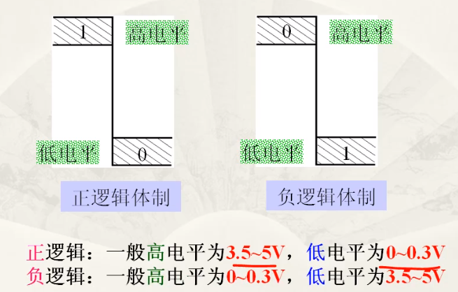
对普通单片机，引脚可检测到
3.5~5V的高电平但对于
ARM芯片，其供电为3.3V，对它来说3~3.3V的视为高电平
1.3 基本逻辑门测试
与门电路【74LS08】
指示器【
PROBE-2.5】：当输出达到2.5V时，指示灯亮一般情况下，逻辑门电路中，多余空闲的引脚一般跟输入并联或接地，不要空闲避免干扰
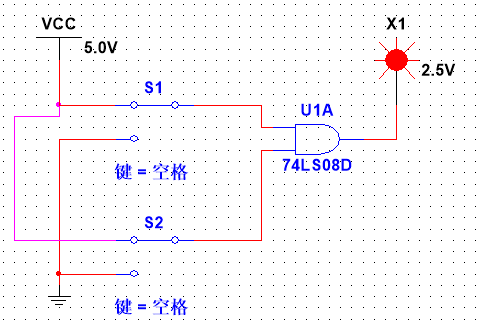
或门电路【74LS32】
非门电路【74HC04】
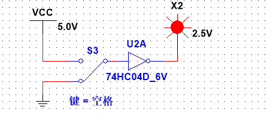
异或门电路【74LS86】
同或门电路【74LS266】
与非门电路【74LS12D】
或非门电路【74LS27N】
1.4 OC门
OC门【Open collector gate】，集电极开路的门电路
TTL门有局限性，比如输出端不能并联、输出高低电压固定不可调节、以及驱动能力低等。而OC门通过外接电源和负载电阻可以克服以上缺点
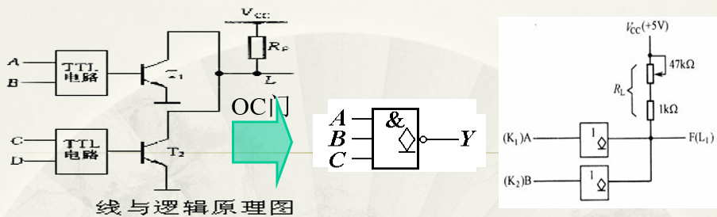
TTL门输出端为何不能并联？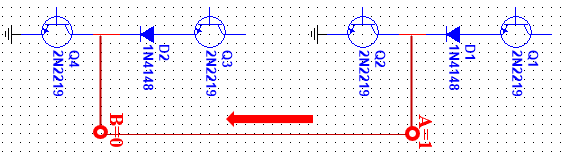
当A端高电平且B端低电平，即此时
Q1、Q4导通，自然会形成电流。而此时Q1高电平处于深度饱和状态，电流会比较大，故这两个三极管容易烧毁。因此不能并联，为实现目标，电路改进【去除上方的三极管，将
Q2集电极悬空，即集电极开路】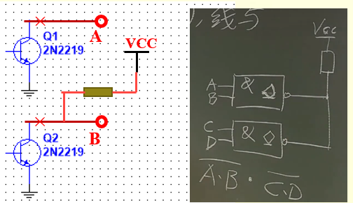
此时，如果
A端三极管导通，A输出低电平；如果三极管截止，相当于集电极断开，三极管属于高阻态【此时，想要输出高电平，需要上拉电阻和电源，如上图所示，三极管集电极断开，B端相当于由VCC提供高电平】【TTL为5V供电，VCC供电无要求，故它可以为后级电路提供更强的驱动能力，即电平转换功能】线与功能：由于三极管截止时集电极是断开的，故不会形成电流，可用于实现“线与逻辑”【只有都为高电平，输出才为高电平】
驱动功能：集电极接一个电阻、一个发光二极管、一个
5V VCC，如果电阻取值合适，电流经过电阻、三极管到地，这是驱动功能
为什么引入OC门？
实际使用中，有时需要两个或两个以上与非门的输出端连接在同一条导线上，将这些与非门上的数据【状态电平】用同一条导线输送出去。
因此，需要一种新的与非门电路【OC门】来实现“线与逻辑”。
OC门主要用于3个方面： 实现与或非逻辑、用做电平转换、用做驱动器。
由于OC门电路的输出管的集电极悬空，使用时需外接一个上拉电阻Rp到电源VCC。OC门使用上拉电阻以输出高电平；此外为了加大输出引脚的驱动能力，上拉电阻阻值的选择原则，从降低功耗及芯片的灌电流能力考虑应当足够大，从确保足够的驱动电流考虑应当足够小。
OD门：为漏极开路的门电路【漏极 |MOS管 | 即场效应管电路】，功能和OC门差不多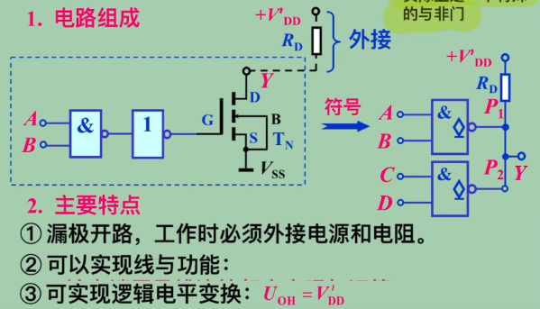
1.5 三态门
具有三种状态的门电路【高电平 | 低电平 | 高阻态】
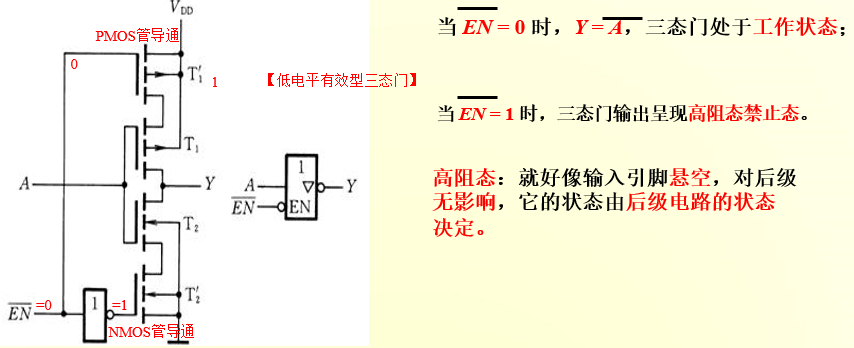
1.6 CMOS传输门
TG【Transmission Gate】：当传输门导通，ui可正常输出uo，且ui = uo；当传输门截止，ui ≠ uo。可用于双向模拟开关
MOS管的漏极和源极结构对称，可互换使用。因此，CMOS传输门的输出端和输入端可互换使用
C、C逆为互补的控制信号
- 当
C = VDD，ui = 0~VDD时，上下两个MOS管中至少有一管导通，输出与输入ui = uo，称为传输门开通 - 当
C = 0V，ui = 0~VDD时，上下两个MOS管均截止，输出与输入之间呈现高电阻，相当于断开，称为传输门关闭
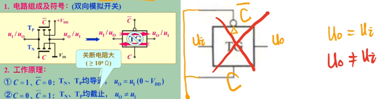
1.7 小结
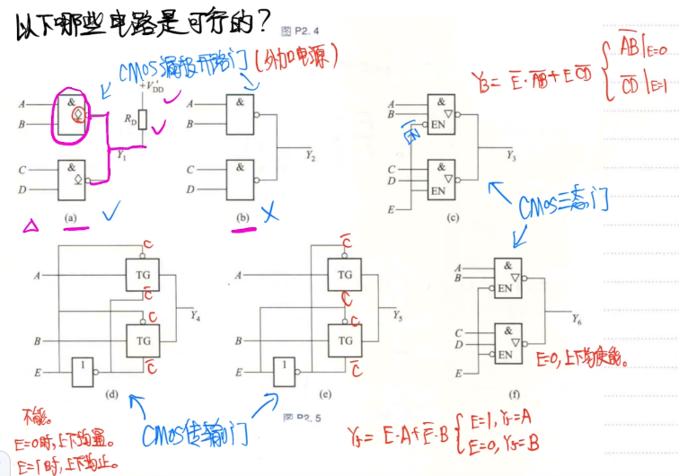
比较：CMOS门电路【MOS管 | 场效应管】 VS TTL门电路【三极管】
- 【以下为前者的特点】功耗极低
- 扛干扰能力强
- 电源电压范围宽
- 输出信号摆幅大【高电平 ≈
VDD| 低电平 ≈0V】【TTL电路低电平约为0.3V】 - 输入阻抗高【对前级电路影响小】
- 扇出系数大【带负载能力强】
- 一般情况下，反应相对于
TTL门来说较慢【电平翻转慢】
闲置输入端的处理
- 与门和与非门：多余的输入端接正电源或与有用输入端并接
- 或门和或非门：多余的输入端接地或与有用输入端并接
CMOS电路：多余的输入端与有用输入端并接【仅适用于工作频率很低的场合】TTL电路输入端悬空相当于输入高电平，CMOS电路多余输入端不允许悬空
2、集成逻辑门电路的选用
- 工作频率【高低电平翻转所需时间】
- 输入电源电压的要求
- 功耗问题
- 电平翻转对输入电压的要求【对于高低电平的标准】
- 灌电流【流入芯片的电流】和拉电流【输出电流 | 用于驱动后级电路】
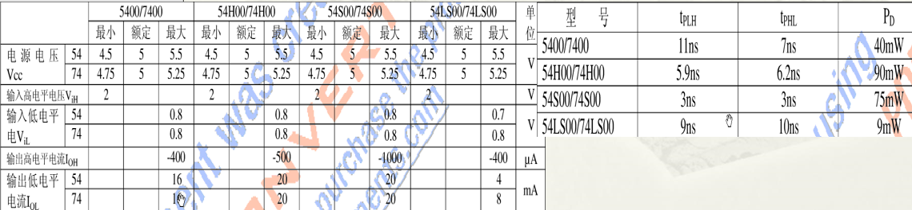
五、组合逻辑门电路
组合逻辑门电路，是由一些逻辑门电路搭建，为实现某种功能而组合的电路。
特点：在任何时刻的输出仅仅取决于该时刻的输入，与电路原来的状态无关。
1、根据电路分析逻辑功能
- 组合逻辑电路图
- 逻辑表达式【可使用软件中的逻辑转换仪】
- 最简表达式
- 真值表
- 确定电路功能
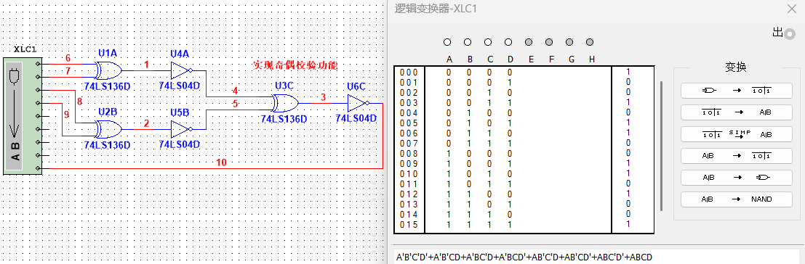
2、根据题目要求设计相应功能逻辑电路
2.1 火灾报警系统
例：火灾报警系统，设有烟感、温感和紫外光感三种不同类型的探测器。为防止误报警，只有其中的两种或三种探测器发出探测信号时，报警系统才产生报警信号，试用与非门设计产生报警信号的电路
设计步骤
- 问题的提出
- 真值表
- 逻辑表达式
- 最简表达式
- 逻辑电路
第一步：题目分析
- 探测器发出报警信号：【设】有火灾为高电平【逻辑1】，无为低电平【逻辑0】
- 三种探测器分别为输入信号ABC，当有两个以上信号成立时，则输出高电平
第二步：使用软件设计真值表
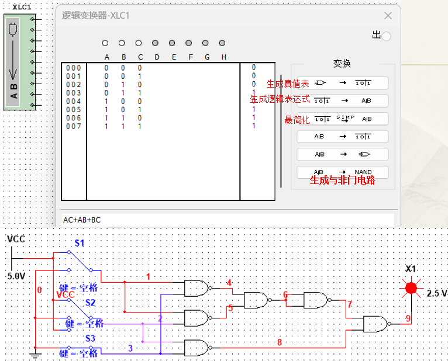
2.2 四人表决器
例：设计一个四人表决电路。如果3人或3人以上同意，则通过；反之否决。试用与非门设计电路
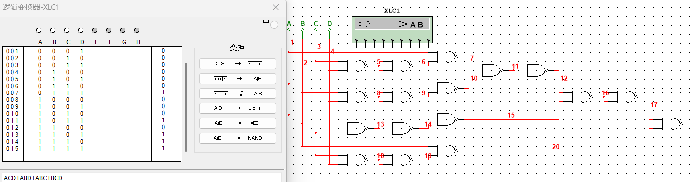
六、编码器与译码器
- 译码【译码器】：二进制代码→某种代码
- 编码【编码器】：某种代码→二进制代码
1、编码器
1.1 二进制编码器
用n位二进制数码对个输入信号进行编码的电路
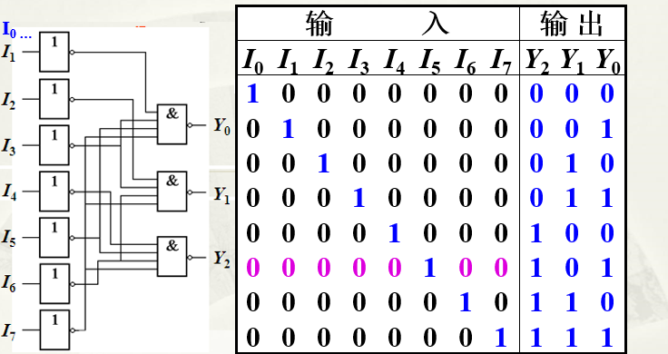
1.2 二十进制编码器
将0~9十个十进制数转化为二进制代码的电路，又称十进制编码区
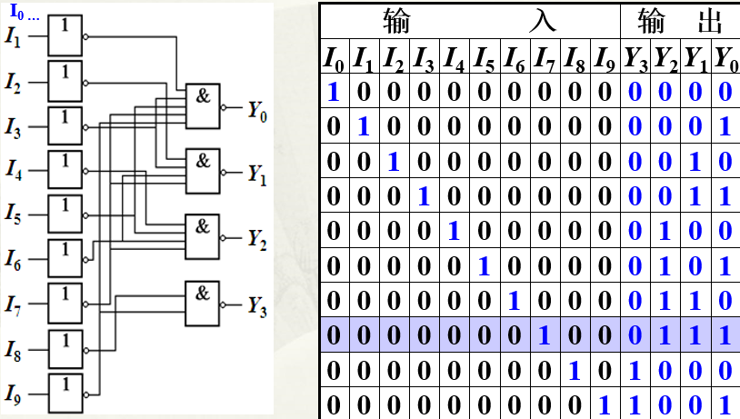
1.3 优先编码器
优先编码器【Priority Encoder】，允许输入数个编码信号，并对其中优先权最高的信号进行编码输出的电路。【普通编码器在任何时刻，只允许一个输入端请求编码，否则输出混乱】【如：二-十进制优先编码器CT74LS147 | 低电平有效】
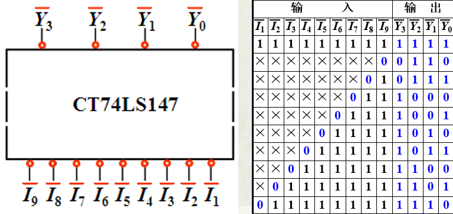
优先编码器测试【74LS148D】
特点：8端输入3端输出，是8线-3线优先编码器，7端优先级最高，0端优先级最低
EI：选通输入端【低电平有效】
EO：选通输出端
GS：宽展端
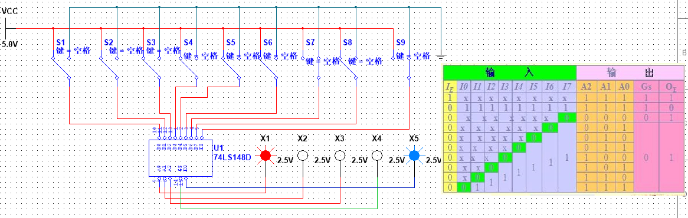
2、译码器
译码器，是编码的逆过程
2.1 二进制译码器
n位二进制代码，通过译码器译码为位输出
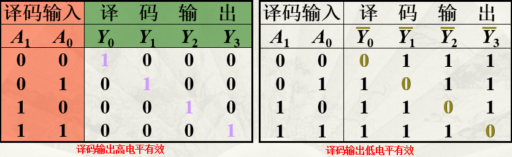
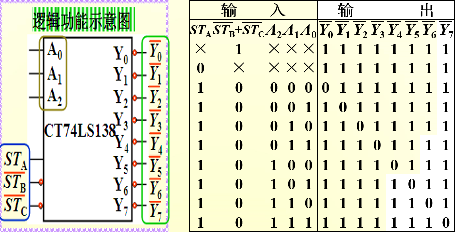
3 线 － 8 线译码器 CT74LS138
2.2 二-十进制译码器
将BCD码的十组代码译成0~9十个对应的输出信号的电路，又称4线－十线译码器
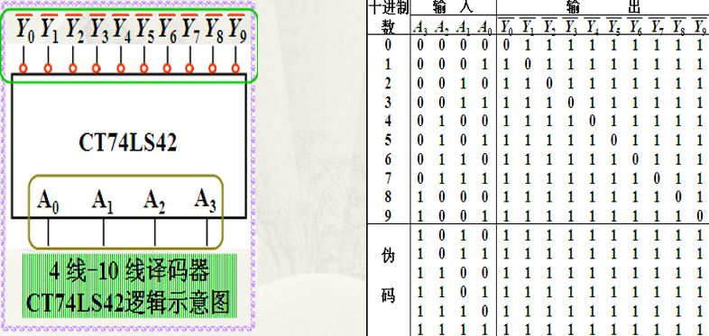
2.3 数码管显示译码器
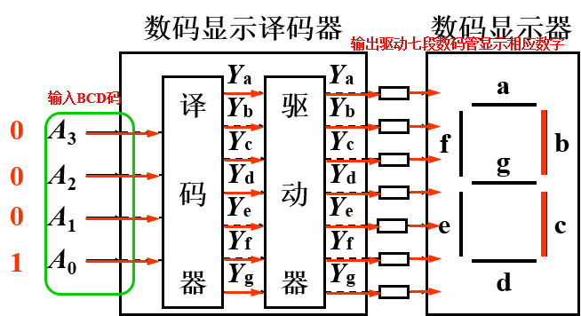
七段显示译码器
EL为锁存控制端：高电平锁存，低电平传输数据LT为灯测试端：高电平显示正常，低电平各段都亮BI为消隐功能端：低电平各段都不亮【消隐状态】
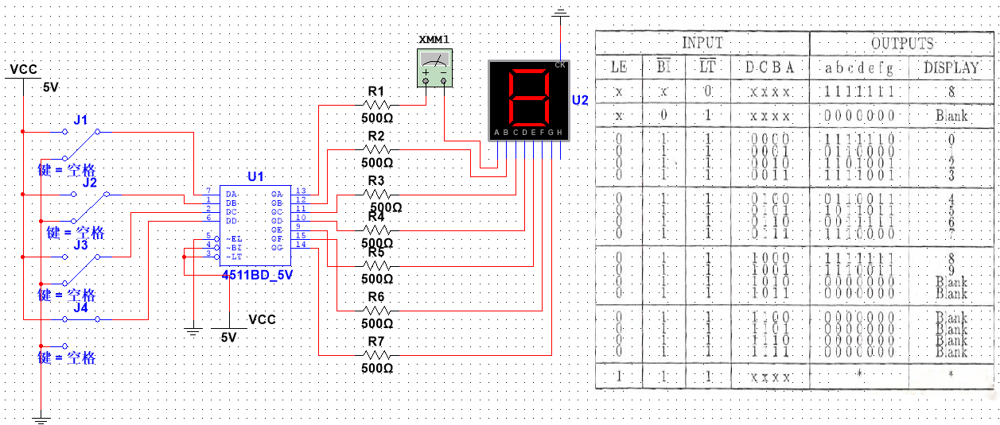
七、触发器
数字电路，分为组合逻辑电路和时序逻辑电路。组合逻辑电路的基本单位是门电路，时序逻辑电路的基本单位是触发器
- 门电路某一时刻的输出信号，完全取决于该时刻的输入信号，无记忆功能
- 触发器具有记忆功能，能够在无信号的情况下保持上一次的信号
触发器的现态和次态
- 现态：触发器接受输入信号之前的状态
- 次态：触发器接受输入信号之后的状态
触发器分类
按电路结构分：
- 基本触发器：输入信号直接加到输入端，是触发器的基本电路结构，是构成其他类型触发器的基础
- 同步触发器：输入信号经过控制门输入，控制门受时钟信号
CP控制 - 边沿触发器：只有时钟信号
CP的上升沿或下降沿时刻，输入的信号才能被接收
按逻辑功能分：
RS触发器JK触发器D触发器T触发器T'触发器
7.1 基本RS触发器
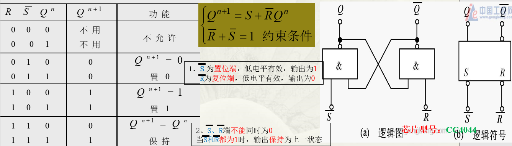
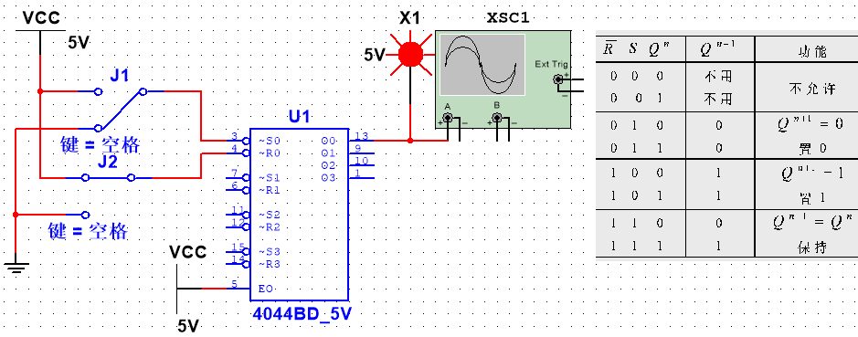
7.1.2 时钟控制RS触发
特点
- 具有时钟输入引脚
CP - 输出信号与输入信号和
CP有关 - 当
CP = 1时：S为置位端，高电平有效，输出为1；R为复位端，高电平有效，输出为0 S、R不能同时为1；当S和R都为0或CP = 0时，输出保持上一状态
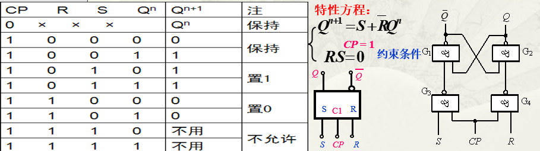
7.2 边沿触发器
7.2.1 JK触发器
凡具有保持、置1、置0、翻转功能的电路都称为JK型时钟触发器，简称为JK触发器
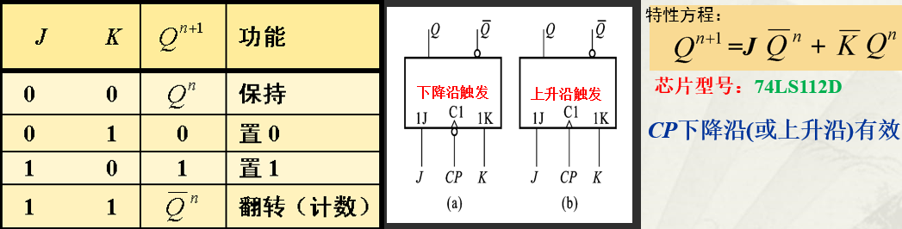
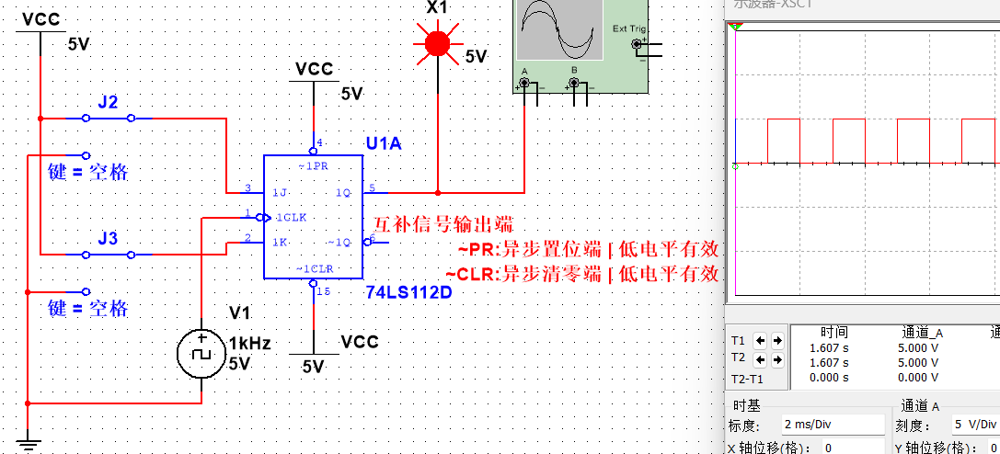
7.2.2 T型触发器
凡具有保持、翻转功能的电路，即当T=0时保持状态不变，T=1时翻转的电路，都称为T触发器
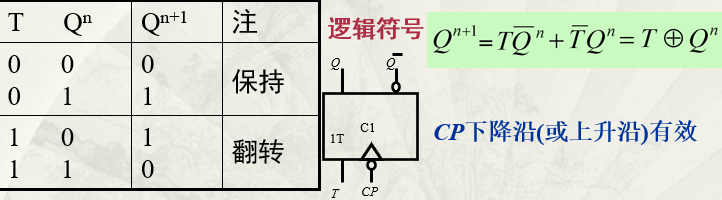
JK触发器→T型触发器
由二者的特征方程可得，将JK触发器的J、K两引脚相连即可
7.2.3 D型触发器
凡具有置1、置0功能的电路都称为D型时钟触发器，简称为D触发器或D型触发器
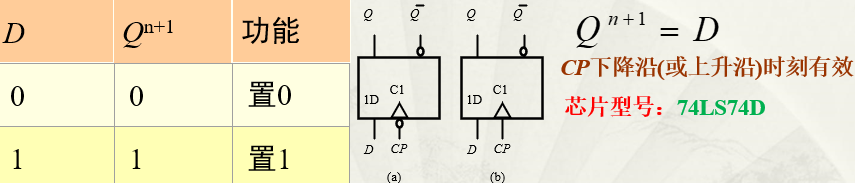
JK触发器→D型触发器
由二者的特征方程可得，将JK触发器的J引脚取反与K引脚相连即可
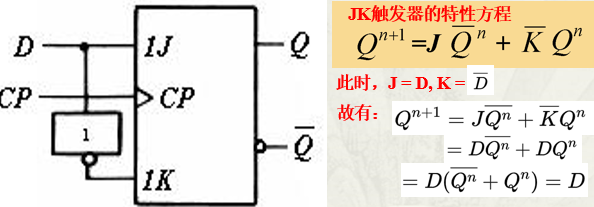
7.2.4 T'触发器
逻辑功能：每来一次时钟脉冲，信号就翻转一次
特征方程：
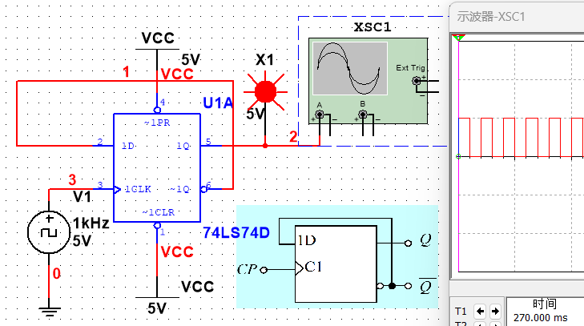
八、计数器
计数器，用于统计输入计数脉冲CP个数的电路
原理：计数器内部由触发器构成，触发器具有记忆功能，1个触发器单元能存储1位二进制数
应用：计数、定时、分频
分类：按CP脉冲引入的方式【同步、异步计数器】、按计数值的增减趋势【加法、减法、循环计数器】、按计数容量【二进制、十进制、任意进制计数器】
8.1 同步计数器和异步计数器的区别
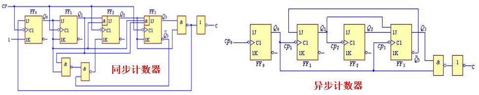
- 同步计数器的外部时钟端都连在一起，而异步计数器没有
- 同步计数器在外部信号到来时触发器同时反转；而异步计数器的触发器为串行连接，工作频率低
- 异步计数器输出状态的建立，要比
CP慢一个传输时间，容易存在竞争冒险
8.2 同步二进制计数器（74LS161）
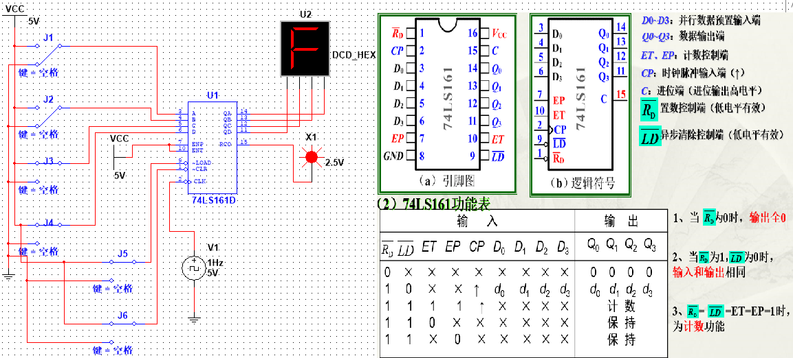
该数码管为
DCD十六进制数码管，自带译码电路
8.3 同步十进制计数器（74LS192）
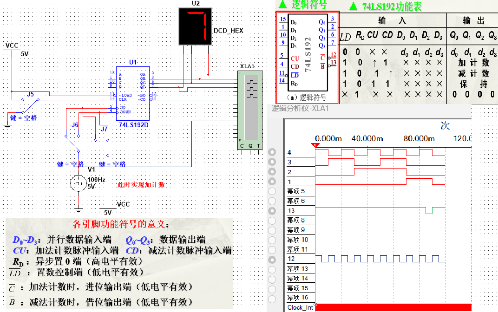
8.3.1 利用74LS192实现100进制计数器
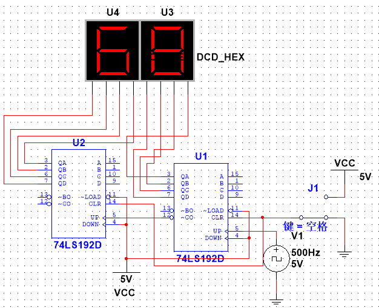
8.4 任意进制计数器
通常有三种方法：
- 直接选用已有的计数器：如欲构成十进制计数器，可选用十进制异步计数器
74LS192 - 用两个计数器串接：如用模六和模十计数器串接，构成模六十计数器
- 利用反馈法该表原有计算器计数长度：当计数器计数到某一数值时，由电路产生置位脉冲或复位脉冲，加到计数器预置数控制端或各个触发器清零控制端，使计数器恢复到起始状态，从而达到改变计数器模的目的
8.4.1 用74LS160 反馈法构成六进制计数器
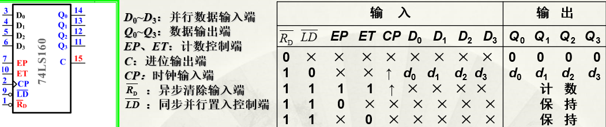
例1：反馈置零法【较优】
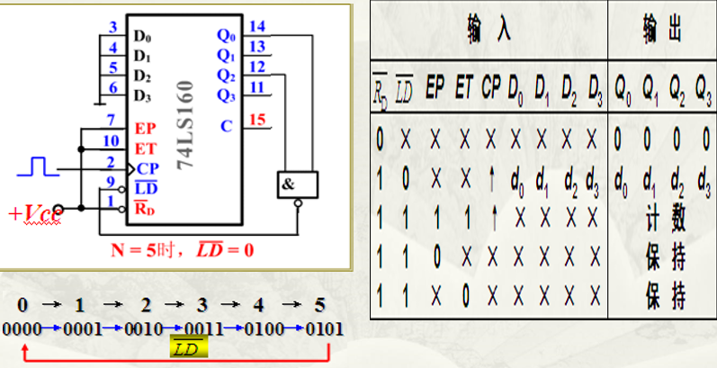
由此可见，N进制计数器可以利用在N-1时，将变为0的方法构成，这种方法称为反馈置零法。
例2：直接清零法
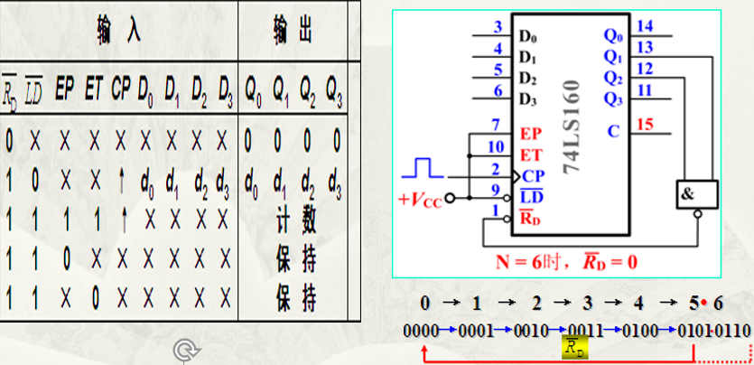
当计数器到达6时【状态6持续时间极短】，Q2、Q1均为1，使，计数器立即被强制回到零状态，开始新的循环。
九、数字电路设计
9.1 简易秒表
要求：
- 时钟源产生
1s的信号 - 数码管显示
0~59 - 具有暂停功能
- 通过按键清除上次计数
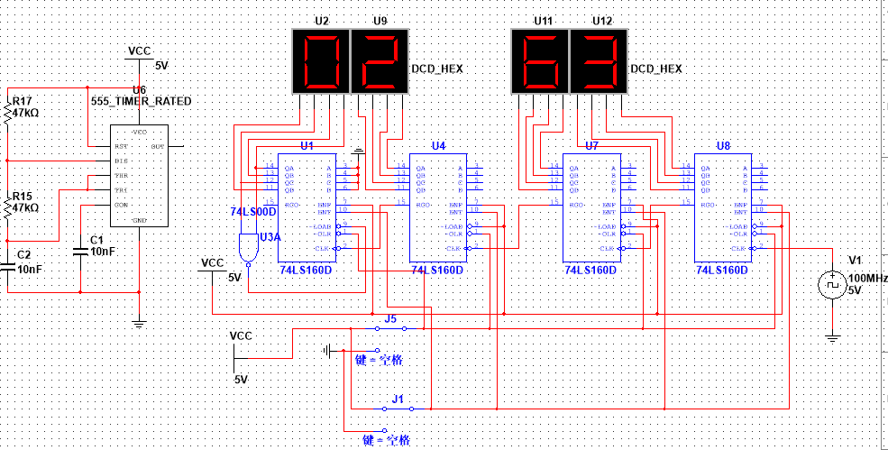
左侧555定时器的多谐震荡，为产生
1HZ的震荡波形右侧
74LS160D为十进制计数器
9.2 简易密码锁
要求：
- 设定三位密码
- 能够显示当前所输入的密码
- 密码正确时，用
LED灯点亮指示
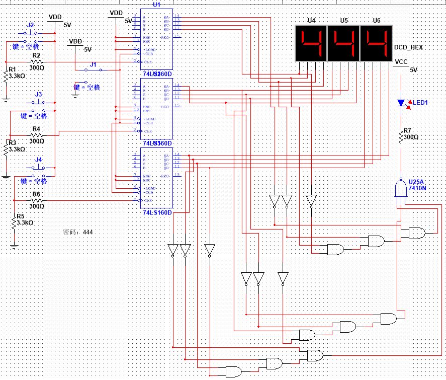
单刀双掷开关
J1连接74LS160异步清零端，实现密码置零同步置入端
LD接VDD高电平，即不使用该引脚功能当波动开关
J2、J3、J4产生高电平的上升沿注入CLK将密码逻辑【可用逻辑转换仪完成，仅当
A=B=D=0且C=1】最后变为低电平，发光二极管才能导通
9.3 简易频率测试仪
用数字电路搭建一个简易测频仪，能够测出范围为10HZ~9KHZ的频率
思路：计数1S【定时器】内有多少脉冲【计数器】
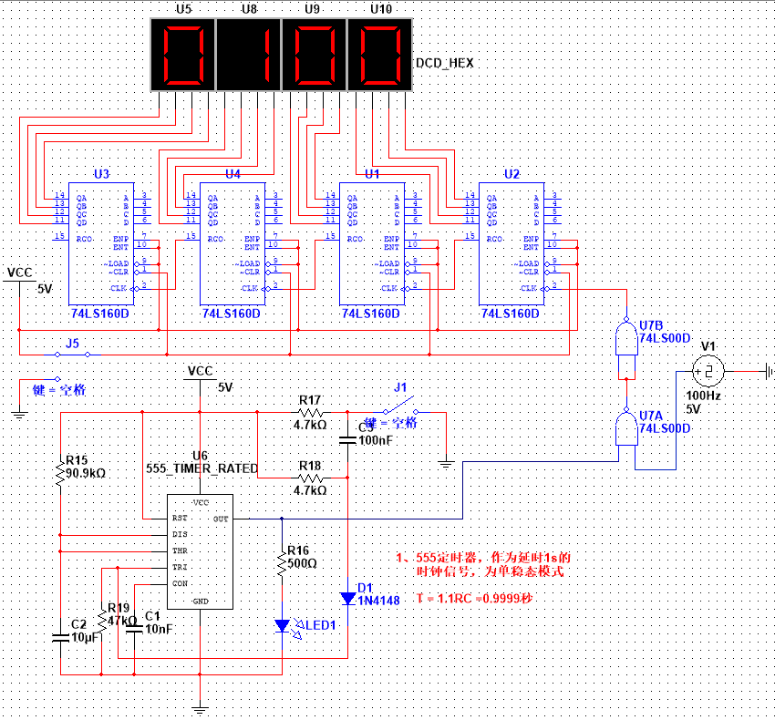
下方为555定时器定时
1s电路【工作在单稳态状态】
- 【右侧】当开关
J1断开，电流从VCC，经过R17、R18和电容的并联，以及二极管D1，到达TRI端【此时为高电平，555定时器为稳定状态】【此时电容C3两端是有电压的，如413.921mV】- 当开关闭合，电容上侧为0V，【因为电容不能突变】电容下侧为
-413.921mV。故会在TRI端产生一个下降沿，555定时器进入暂稳态【VCC开始给电容C2充电，充电时间约为1s】上方为四个
74LS160计数器，ENP、ENP、LD、CLR均接高电平，计数器处于计数状态，CLK端通过RCO进位端进行级联
9.4 抢答器设计
要求：
- 抢答器同时提供6名选手或6个代表队赛，分别用6个按钮S1~S6表示
- 设置一个系统清除开关，该开关由主持人控制
- 抢答器具有锁存和显示功能，即选手按动按钮，锁存相应的编号，并在LED数码管上显示。选手抢答实行优先锁存，优先抢答选手的编号一直保持到主持人将系统清除为止
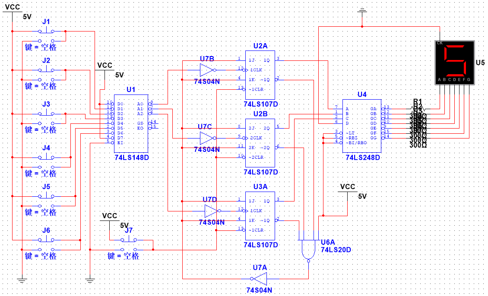
74LS148D：8输入3输出优先编码器
- 只用6个输入，故将
D0、D7接高电平EI【选通端 | 低电平有效，故接地选通】
74LS107D：JK触发器
CLR【清零端接VCC与按钮开关，可进行手动清零操作】J端、K端相连构成T触发器【即低电平保持，高电平翻转】
74LS20D：四输入非门
74LS248D：数码管译码器
- 【以按5号为例】
D5接收到一个低电平，输出为【A2A1A0 = 010】 - 三个输出经过非门，三个
T触发器分别接收到1、0、1 - 按钮松开后，
D0~D7输入均为1，优先编码器输出为全1，经过非门后，三个T触发器接收到0、0、0，故仅有第一个和第三个触发器会差生下降沿 - 由于，刚开始时进行了清零，故三个触发器
Q=0 Q逆=1，其经过四输入与非门和非门输出为1，该信号反馈给JK端，当产生CLK信号，第一个和第三个触发器发生翻转，其Q端输出为1、0、1【该信号输入进数码管译码器】 - 【再次按其他按钮，为何不会翻转？】【以按6号为例】
D6接收到一个低电平，输出为【A2A1A0 = 001】【省略若干】可以看到，经过四输入与非门和非门输出为0，T触发器处于保持状态